هزيمة ١٩٦٧
احتلت إسرائيل سيناء والجولان والضفة الغربية وقطاع غزة، وأصبحت قناة السويس خط المواجهة.
احتلت إسرائيل سيناء والجولان والضفة الغربية وقطاع غزة، وأصبحت قناة السويس خط المواجهة.
من ١٩٦٧ إلى ١٩٧٠ استمرت المعارك على ضفتي القناة، وأعادت للجيش ثقته بنفسه.
ظلت الأرض محتلة رغم المحاولات السياسية، فتأكدت القيادة أن استعادتها تحتاج إلى القوة.
ست سنوات من التدريب المكثف والتسليح الجديد ووضع الخطط الدقيقة.
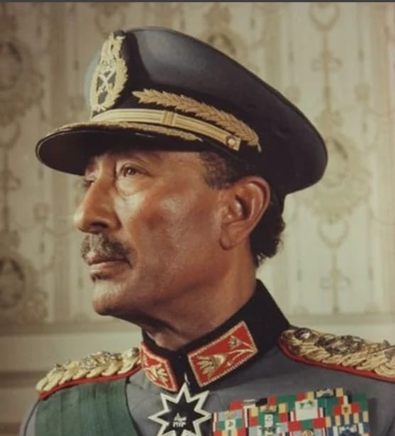
صاحب قرار الحرب
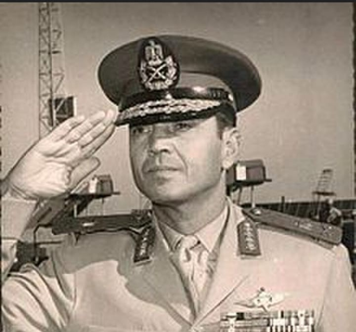
وزير الحربية والقائد العام
رئيس أركان حرب القوات المسلحة
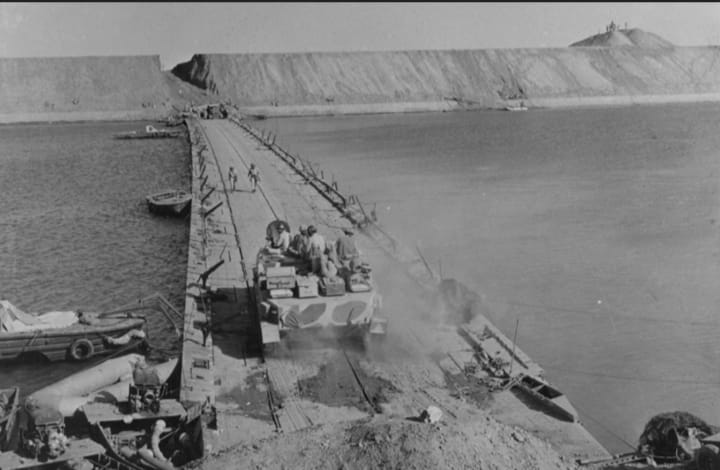
خطة العبور واقتحام خط بارليف
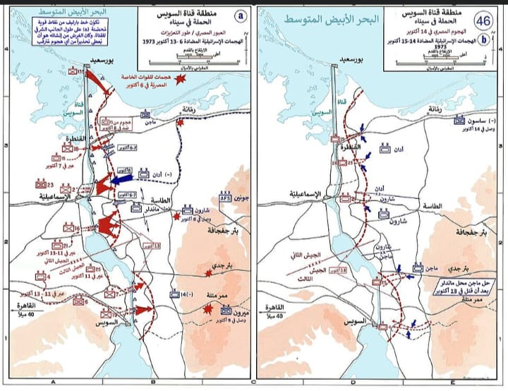
إخفاء موعد الحرب عن العدو
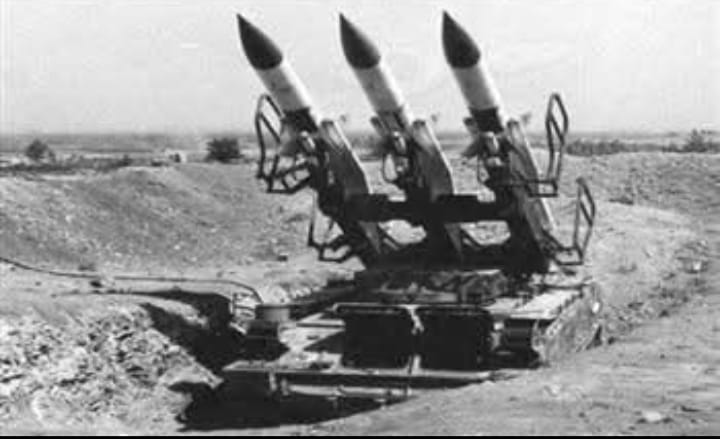
حماية القوات من الطيران
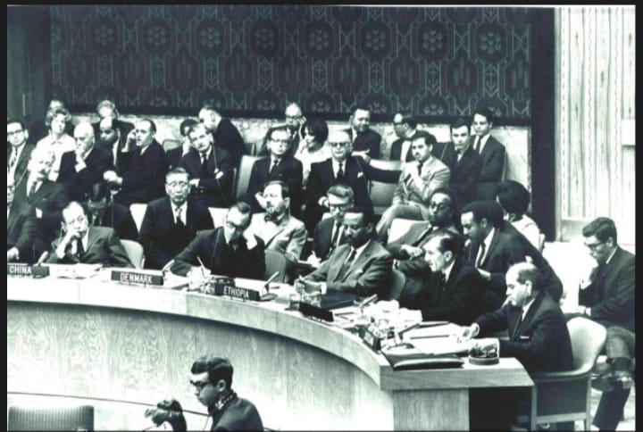
عبرت القوات القناة بالقوارب المطاطية، وفتح المهندسون ثغرات في الساتر الترابي بمضخات المياه، ثم أقاموا الكباري لعبور المعدات.
هاجمت القوات السورية في الجولان، واستعادت في اليوم الأول موقع جبل الشيخ.
اشتبك الطيران المصري مع الطيران الإسرائيلي في سماء الدلتا، ويحتفل سلاح الطيران بهذا اليوم كل عام.
من أكبر معارك الدبابات في التاريخ الحديث، وغيّرت مسار العمليات على الجبهة.
تسللت قوة إسرائيلية غرب القناة، لكن مدينة السويس صمدت وأفشلت دخولها.
شبكة الدفاع الجوي التي حمت القوات العابرة من الضربات الجوية.
صواريخ موجهة مضادة للدبابات حملها الجنود ودمروا بها أعدادا من دبابات العدو.
فتحت ثغرات في الساتر الترابي في وقت قصير.
نقلت الجنود أولا ثم الدبابات والمعدات إلى الضفة الشرقية.
من مقاتلات سلاح الجو المصري في المعارك الجوية.
شكلت قوة الدبابات في المعارك البرية.
انسحبت القوات الإسرائيلية من غرب القناة ومن جزء من شرقها.
وقعت مصر وإسرائيل المعاهدة، وحددت جدول الانسحاب من سيناء.
اكتمل الانسحاب في ٢٥ أبريل ما عدا منطقة طابا.
رُفع العلم المصري على طابا في ١٩ مارس بعد تحكيم دولي.
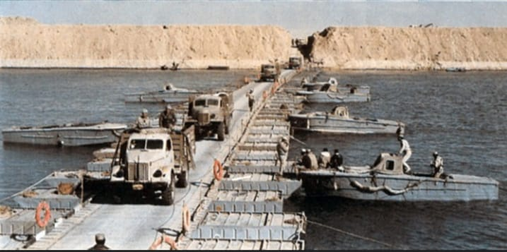
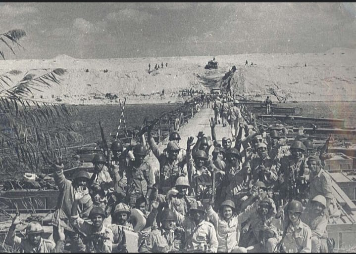
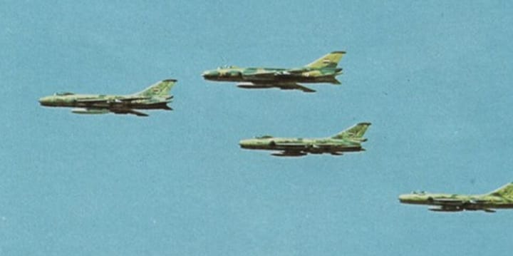
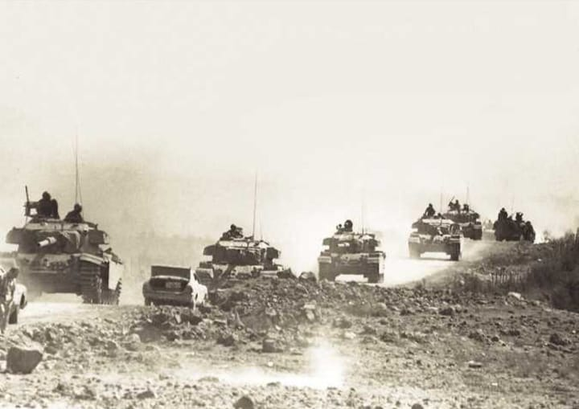
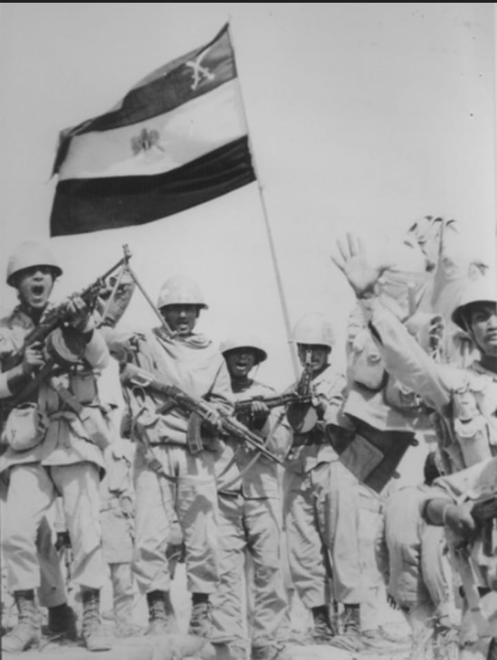
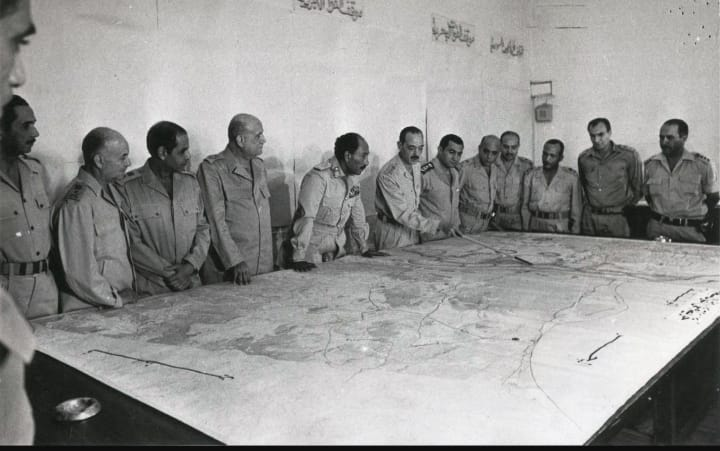
مسؤول الفرونت اند و تصميمات
مبرمج الباك اند و الفرونت اند

جمع الداتا و جاب صور و فديوهات